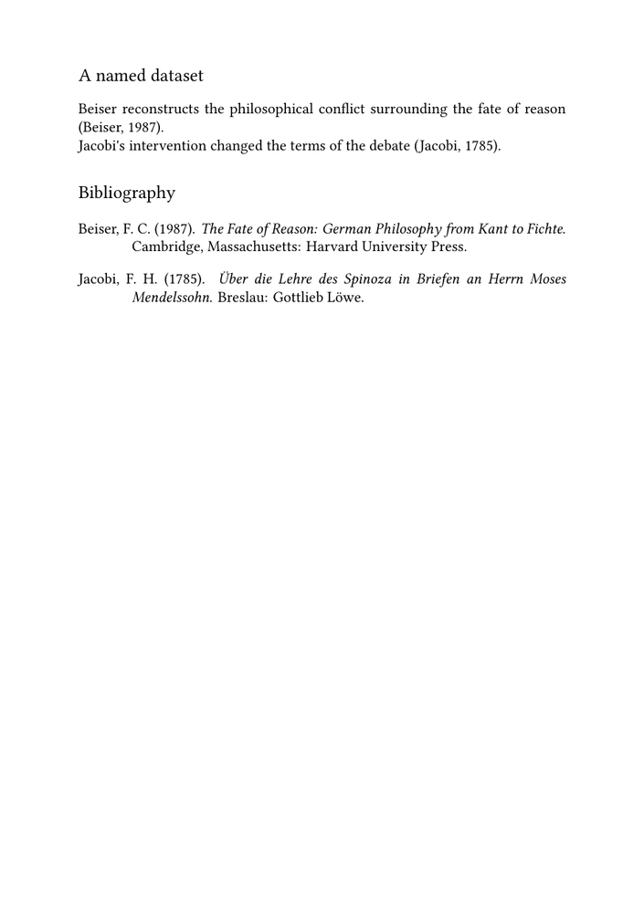

🚧 This page is under construction. Feel free to correct, expand, and improve it; its structure and examples may still change.
Bibliography guides — Guide 2 of 4
← Previous: Guide 1 — Creating a bibliography and citing sources · Current: Guide 2 — Understanding datasets, styles, renderings, selection, and sorting · Next: Guide 3 — Creating local and multiple bibliographies →
Contents
- 1 1. Understanding the bibliography architecture
- 2 2. The layers of the bibliography system
- 3 3. Bibliographic sources and datasets
- 4 4. Specifications and citation alternatives
- 5 5. Renderings and placement
- 6 6. Controlling bibliography scope and reuse
- 7 7. Sorting records with sorttype
- 8 8. MWE: putting the layers together
- 9 9. Diagnosing the wrong layer
- 10 10. What you have learned
- 11 11. Related pages and commands
1. Understanding the bibliography architecture
The first guide showed how to load bibliographic records, cite them, and place a bibliography.
That basic workflow is sufficient for a small document, but it does not yet explain:
- why one record appears while another is omitted;
- why records are displayed in a particular order;
- how a bibliography list is related to a dataset;
- how the same records can be presented in different ways;
- how citation forms can be adapted without changing correct bibliographic data;
- why a supplied bibliographic specification may not implement the latest edition of an external style manual;
- how recurring project-specific citation conventions can be centralised;
- how chapter-level or document-wide bibliography scope is controlled;
- why an already rendered record may or may not appear again;
- which part of the setup must be changed when the output is wrong.
This guide separates the main layers of the ConTeXt bibliography subsystem.
By the end of the guide, you should be able to:
- distinguish a bibliographic source from a dataset;
- understand the role of a bibliographic specification;
- distinguish a citation alternative from a bibliography rendering;
- identify when a citation problem belongs to the presentation layer rather than to the data;
- adapt a citation alternative for a project-specific requirement;
- centralise recurring citation conventions in an environment file;
- recognise that a supplied specification may implement an earlier edition of an external style;
- define and place a named rendering;
-
understand the distinct roles of
method,
criterium, andrepeat;
- control the scope from which a bibliography is rendered;
- understand when already rendered records may be reused;
-
sort resulting records with
sorttype; - distinguish bibliography scope from sorting;
- identify the layer responsible for an unexpected result.
The main difficulty is not the syntax.
Loading data, formatting citations, defining a bibliography list, determining its scope, deciding whether entries may be rendered again, sorting them, and placing the list are related operations, but they are not the same operation.
A useful rule throughout this guide is to identify the responsible layer before changing either the bibliographic data or the document setup.
2. The layers of the bibliography system
A simplified workflow can be represented as follows:
bibliographic source
|
v
dataset
|
+--------------------> citation alternative
| |
| v
| project adaptation
|
v
specification + rendering
|
v
bibliography scope
method + criterium
|
v
repeat policy
|
v
sorting with sorttype
|
v
bibliography placement
The main elements are:
| Element | Main function | Typical command or setting |
|---|---|---|
| Bibliographic source | Stores bibliographic records in a file, buffer, Lua table, XML structure, or another supported source. | references.bib, biblio.buffer
|
| Dataset | Makes a named collection of records available to ConTeXt. | \usebtxdataset
|
| Specification | Defines general conventions for citations and bibliography entries. | \usebtxdefinitions[apa]
|
| Citation alternative | Determines how a record is displayed at the point of citation. | \cite[authoryear][key]
|
| Project-specific citation adaptation | Adjusts a citation form required by a particular project without altering correct bibliographic data. | \setupbtx, citation options, project macros
|
| Rendering | Defines a named bibliography list associated with a dataset and a specification. | \definebtxrendering
|
method
|
Controls how the rendering uses the available bibliography reference state, for example the dataset or globally registered references. | method=dataset, global, or local
|
criterium
|
Restricts the rendering to a particular reference or structural scope, such as the current chapter. | criterium=chapter
|
repeat
|
Controls whether records that have already been rendered may be rendered again. | repeat=yes
|
| Sorting | Determines the order of the resulting records. | sorttype=authoryear
|
| Placement | Inserts a bibliography list at a particular position. | \placebtxrendering or \placelistofpublications
|
A useful diagnostic sequence
When the output is wrong, ask:
- Is the record present in the bibliographic source?
- Has it been loaded into the expected dataset?
- Has the record been cited or otherwise registered for use?
- If the citation itself is wrong, is the responsible rule in the specification, the citation alternative, or a project-specific adaptation?
- Is the correct rendering associated with the correct dataset?
-
Do
methodandcriteriumdescribe the intended bibliography scope? -
Does
repeatallow an already rendered record to appear again? - Are the resulting records sorted as expected?
- Is the list placed at the intended location?
3. Bibliographic sources and datasets
3.1. A source is not a dataset
A .bib file is a source of bibliographic data.
For example:
references.bib
may contain:
@Book{beiser1987, author = {Beiser, Frederick C.}, title = {The Fate of Reason}, subtitle = {German Philosophy from Kant to Fichte}, publisher = {Harvard University Press}, address = {Cambridge, Massachusetts}, year = {1987}, }
The command:
\usebtxdataset [main] [references.bib]
loads the records into a dataset named main.
| Object | Meaning |
|---|---|
references.bib
|
The source in which the record is stored. |
main
|
The logical collection through which ConTeXt accesses the record. |
A dataset may receive records from one source or from several sources.
3.2. Naming a dataset
The first argument of \usebtxdataset names the dataset:
\usebtxdataset [philosophy] [references.bib]
Useful names describe the editorial role of the collection:
main philosophy primary secondary translations
The name default is convenient in a small document.
Descriptive names are preferable when several collections are used.
3.3. Choosing a default dataset
A named dataset can be selected as the default dataset:
\setupbtx [dataset=philosophy]
An unqualified citation can then use:
\cite [authoryear] [beiser1987]
Setting a default dataset does not merge datasets. It identifies the dataset used for references that do not explicitly name one.
3.4. Qualifying a record explicitly
A record can be addressed with its dataset name:
\cite [authoryear] [philosophy::beiser1987]
The syntax is:
dataset::key
Thus:
philosophy::beiser1987
identifies the record beiser1987 in the dataset
philosophy.
Explicit qualification is especially useful:
- in examples using named datasets;
- in projects containing several datasets;
- when identical or similar keys occur in different collections.
The systematic use of several datasets is developed in Guide 3.
3.5. Loading several sources into one dataset
Several files can contribute records to one dataset:
\usebtxdataset [main] [books.bib] \usebtxdataset [main] [articles.bib]
The records from both files become available through the dataset
main.
Their record keys must remain unique within that dataset.
3.6. MWE: one source and one named dataset
The following example stores the records in a buffer and loads them into the
dataset named philosophy.
-
\mainlanguage[en] \setuppapersize[A5] \setuplayout [backspace=18mm, topspace=15mm, width=middle, height=middle, header=0pt, footer=8mm] \setupbodyfont [libertinus,10pt] \startbuffer[biblio] @Book{beiser1987, author = {Beiser, Frederick C.}, title = {The Fate of Reason}, subtitle = {German Philosophy from Kant to Fichte}, publisher = {Harvard University Press}, address = {Cambridge, Massachusetts}, year = {1987}, } @Book{jacobi1785, author = {Jacobi, Friedrich Heinrich}, title = {Über die Lehre des Spinoza in Briefen an Herrn Moses Mendelssohn}, publisher = {Gottlieb Löwe}, address = {Breslau}, year = {1785}, } \stopbuffer \usebtxdataset [philosophy] [biblio.buffer] \usebtxdefinitions [apa] \definebtxrendering [philosophylist] [apa] [dataset=philosophy, sorttype=authoryear] \starttext \subject{A named dataset} Beiser reconstructs the philosophical conflict surrounding the fate of reason \cite[authoryear][philosophy::beiser1987]. Jacobi's intervention changed the terms of the debate \cite[authoryear][philosophy::jacobi1785]. \subject{Bibliography} \placebtxrendering [philosophylist] [method=global] \stoptext
-

This example distinguishes:
| Name | Role |
|---|---|
biblio.buffer
|
Bibliographic source |
philosophy
|
Dataset |
philosophy::beiser1987
|
Explicitly qualified record |
apa
|
Bibliographic specification |
philosophylist
|
Named rendering |
method=global
|
Uses bibliography references registered globally in the document |
sorttype=authoryear
|
Orders the resulting records by author and year |
4. Specifications and citation alternatives
4.1. What a specification controls
A bibliographic specification defines general rules for presenting citations and bibliography entries.
It may control:
- the order of names and fields;
- punctuation;
- the position of the publication year;
- the use of italics and quotation marks;
- the treatment of authors, editors, and translators;
- the presentation of different record categories;
- the default forms of citations and bibliography entries.
A specification is loaded with:
\usebtxdefinitions [apa]
The name apa identifies formatting definitions. It is not the
name of a source file or dataset.
4.2. Data remain independent of presentation
A record stores publication data:
@Book{beiser1987, author = {Beiser, Frederick C.}, title = {The Fate of Reason}, publisher = {Harvard University Press}, year = {1987}, }
It does not itself state whether a citation should appear as:
(Beiser, 1987) (Beiser 1987, 42) (Beiser 42) [1]
Those forms belong to different citation conventions.
Central principle
Changing the specification or citation setup changes the presentation, not the underlying bibliographic record.
Correct bibliographic data should not normally be removed, duplicated, or rewritten merely to force a particular citation form.
4.3. Citation alternatives
A citation alternative determines how a record is displayed at the point of use.
For example:
\cite [authoryear] [beiser1987]
requests an author–year citation.
The same structured record may be presented with another citation alternative without changing the bibliographic data.
Citation alternatives may also have their own settings for punctuation, separators, author lists, labels, years, or other elements. This becomes important when a supplied style must be adapted to the precise requirements of a project.
Developed references in notes and complete note-citation systems require additional treatment and are not developed in this guide.
4.4. Style families
Common bibliographic conventions include:
- author–date;
- author–page;
- numerical;
- notes and bibliography;
- project-specific or publisher-specific styles.
A familiar style name does not guarantee that every variant is supplied or fully implemented by a particular ConTeXt installation.
Before using a style in production:
- identify the exact editorial convention required;
- inspect the definitions supplied with the current distribution;
- compare the result with the official publications manual;
- determine whether project-specific adaptation is necessary.
4.5. A supplied specification may implement an earlier edition of a style
Loading a named bibliographic specification does not necessarily mean that every rule implemented by that specification corresponds to the latest edition of the external style manual.
This distinction matters particularly for bibliographic styles whose rules have changed over time.
Consider a record with five authors:
@Article{hook2013cultural, author = {Hook, J. N. and Davis, D. E. and Owen, J. and Worthington, Jr., E. L. and Utsey, S. O}, title = {Cultural humility: Measuring openness to culturally diverse clients}, journal = {Journal of Counseling Psychology}, volume = {60}, number = {3}, pages = {353--366}, year = {2013}, doi = {10.1037/a0032595}, }
With the supplied APA specification, a citation such as:
\cite [authoryear] [main::hook2013cultural]
may produce:
(Hook, Davis, Owen, Worthington, & Utsey, 2013)
The bibliographic record is not responsible for this choice. The author field correctly records the authors of the article. The form in which those names appear in a citation is controlled by t he active bibliographic specification.
The APA specification currently supplied with ConTeXt explicitly identifies the sixth edition of the Publication Manual of the American Psychological Association (2010) as its reference. For citations, its definition contains the equivalent of:
etallimit=5, etaldisplay=1,
and therefore does not abbreviate a list containing five authors.
APA 7 changed this rule. In an in-text citation for a work with three or more authors, the surname of the first author is followed by et al. from the first citation onwards. The ordinary form for the example above is therefore:
(Hook et al., 2013)
There is an important exception. If shortening two different works would produce indistinguishable citations, enough author names must be retained to distinguish them before et al. is added.
For the ordinary three-or-more-author case, the authoryear
citation namespace can be adjusted locally after loading the supplied APA
definitions:
\usebtxdefinitions [apa] \setupbtx [apa:cite:authoryear] [etallimit=2, etaldisplay=1, otherstext={\btxspace\btxlabeltext{others}}]
Here:
-
etallimit=2causes a list containing more than two authors to be abbreviated; -
etaldisplay=1retains only the first author's name before the abbreviation; -
otherstextsupplies the et al. text without the comma inserted by the older supplied APA citation definition.
The bibliographic data themselves remain unchanged. What has changed is the rule used to present those data in this particular citation alternative.
The difference between APA 6 and APA 7 is not limited to in-text citations. The supplied ConTeXt APA definition also contains the following settings for author lists in bibliography entries:
etallimit=7, etaldisplay=6, etaloption=last,
These reflect the earlier APA treatment of long author lists. APA 7 instead lists all authors when a reference has up to 20 authors; for 21 or more, it lists the first 19 authors, followed by an ellipsis and the final author.
Identify the responsible layer before changing the data.
If author names, punctuation, abbreviation rules, or other citation details do not follow the editorial convention required by a project, first inspect the active specification and citation setup. Do not alter a correct bibliographic record merely to obtain a different citation form.
The local adjustment above addresses one ordinary APA 7 in-text citation
rule. It should not be understood as converting the complete supplied
apa specification into an APA 7 implementation. A change of
edition may also affect bibliography entries, disambiguation rules, the
treatment of long author lists, punctuation, and other details.
For production work, the supplied ConTeXt definition should therefore be checked against the precise edition of the external standard required by the project.
4.6. Adapting citation alternatives for project-specific cases
Not every citation requirement is the consequence of a change between editions of an external style manual.
A project may also require a specialised form for a particular class of sources. Institutional publications, legal or canonical texts, reference works, standards, and other repeatedly cited sources are common examples.
The same general principle still applies:
bibliographic data -> remain in the dataset citation form -> belongs to the presentation layer project convention -> should preferably be defined once
4.6.1. Keep each bibliographic record complete
Suppose a project cites several publications by the same institution:
@Book{nice2005ocd, author = {{National Institute for Health and Care Excellence}}, title = {Obsessive-compulsive disorder and body dysmorphic disorder: Treatment}, year = {2005}, series = {Clinical Guideline}, number = {CG31}, shorthand = {NICE}, } @Book{nice2018ptsd, author = {{National Institute for Health and Care Excellence}}, title = {Post-traumatic stress disorder}, year = {2018}, series = {NICE Guideline}, number = {NG116}, shorthand = {NICE}, } @Book{nice2022depression, author = {{National Institute for Health and Care Excellence}}, title = {Depression in adults: Treatment and management}, year = {2022}, series = {NICE Guideline}, number = {NG222}, shorthand = {NICE}, }
Each record should remain bibliographically autonomous.
In particular, the later records should not lose:
shorthand = {NICE},
merely because several records may sometimes be cited together.
Likewise, the publication years should remain in the year fields.
They should not be duplicated manually in a citation option such as
righttext simply to obtain a desired grouped citation.
4.6.2. One common label with several publication years
A project may want the three records above to appear together as:
(NICE, 2005, 2018, 2022)
This is not the same operation as citing three independent shorthand values.
A citation alternative that directly prints the shorthand field
for each cited record is evaluated once for every record in the citation
list. Consequently, a multi-record citation naturally repeats the shorthand.
Conceptually:
record 1 -> NICE record 2 -> NICE record 3 -> NICE
Changing or deleting the shorthand field in the bibliographic
records would therefore address the wrong layer of the problem.
For this particular grouped form, the useful information supplied by the
three records is the sequence of years. The common institutional label can be
introduced once, while the year citation alternative retrieves
the years from the dataset:
\cite [alternative=year, left={(NICE,\space}, right={)}, separator:3={\btxcomma}, separator:4={\btxcomma}] [main::nice2005ocd, main::nice2018ptsd, main::nice2022depression]
The result is:
(NICE, 2005, 2018, 2022)
The important point is that the years are still obtained from the bibliographic records. They have not been copied into the document source as literal citation text.
4.6.3. List separators belong to the citation alternative
With the APA year citation alternative, a list of years may
normally use a final conjunction, for example:
(NICE, 2005, 2018, and 2022)
In the current BTX APA citation definitions, that final conjunction is
controlled by the citation-list separators rather than by the older
lastpubsep mechanism.
The relevant distinction is:
separator:2 -> separator between ordinary items separator:3 -> final separator in a list of more than two items separator:4 -> separator in a two-item list
Therefore a project requiring comma-separated years can override the citation separators:
separator:2={\btxcomma}, separator:3={\btxcomma}, separator:4={\btxcomma}
Using all three explicitly makes the project rule clear and also covers the two-publication case.
Do not confuse old publication parameters with BTX citation separators.
A parameter name remembered from an earlier bibliography interface may not control the corresponding element in a current BTX citation alternative.
When a punctuation override appears to have no effect, inspect the definition of the active citation alternative before changing the bibliographic data or adding literal punctuation to the citation text.
4.6.4. Centralising a recurring project convention
If the grouped form occurs repeatedly in a large project, the citation setup should not be copied into every chapter or component.
A project environment can define a small wrapper:
\def\citegroupyears[#1][#2]{% \cite [alternative=year, left={(#1,\space}, right={)}, separator:2={\btxcomma}, separator:3={\btxcomma}, separator:4={\btxcomma}] [#2]% }
The document source can then use:
\citegroupyears [NICE] [main::nice2005ocd, main::nice2018ptsd, main::nice2022depression]
to obtain:
(NICE, 2005, 2018, 2022)
This division of responsibility is useful in large documents:
| Layer | Responsibility |
|---|---|
| Bibliographic source | Stores the institutional author, year, title, shorthand, and other bibliographic data for each record. |
| Dataset | Makes those records available to ConTeXt. |
| Citation alternative | Retrieves and formats the relevant citation data. |
| Project environment | Centralises a recurring project-specific citation convention. |
| Chapter or component | Identifies only the records to be cited. |
The wrapper above still supplies the displayed common label, such as
NICE, as a document-level argument. A more specialised
bibliographic definition could instead be designed to retrieve and group a
common shorthand automatically.
For many projects, however, a small explicit environment macro is easier to understand, maintain, and diagnose.
Project rule
Keep publication facts in the bibliographic records.
Keep recurring presentation rules in the bibliography setup or project environment.
Avoid duplicating bibliographic facts such as publication years in literal citation text when ConTeXt can retrieve them from the dataset.
5. Renderings and placement
5.1. A dataset and a rendering are different objects
A dataset contains records.
A rendering defines a particular bibliography list constructed from those records.
One dataset can therefore be used by several renderings.
For example:
\definebtxrendering [mainlist] [apa] [dataset=main, sorttype=authoryear]
Here:
-
mainlistis the rendering name; -
apais the specification; -
dataset=mainidentifies the dataset; -
sorttype=authoryeardefines the order of the resulting records.
5.2. Configuring a rendering
A rendering can be configured after it has been defined:
\setupbtxrendering [mainlist] [sorttype=authoryear, numbering=no]
This is useful when bibliography settings are centralised in an environment file.
The same organisational principle applies to recurring citation adaptations: configuration that belongs to the project as a whole is generally easier to maintain when it is defined once rather than repeated in individual chapters or components.
5.3. Definition is not placement
Defining a rendering does not print it.
The definition:
\definebtxrendering [mainlist] [apa] [dataset=main]
creates the bibliography configuration.
The placement:
\placebtxrendering [mainlist] [method=global]
inserts the corresponding list at the current position.
Definition and placement answer different questions
- The rendering answers: “Which list is this, and how is it configured?”
- The placement command answers: “Where should this list appear, and with what scope for this placement?”
Placement options may further restrict the scope of a rendering. In particular,
criterium can identify a reference or structural scope. This
becomes important for chapter-level bibliographies.
5.4. Two placement interfaces
Simple examples may use:
\placelistofpublications
Named renderings may be placed explicitly with:
\placebtxrendering [mainlist] [method=global]
This guide uses \placebtxrendering when a named rendering has
been defined, because the relation between the rendering and its placement is
then explicit.
6. Controlling bibliography scope and reuse
Bibliography output depends on more than one setting.
Three parameters are especially easy to confuse:
-
method; -
criterium; -
repeat.
They answer different questions and should not be treated as synonyms.
6.1. The role of method
The method setting controls how a rendering uses the bibliography
reference state available to it.
Common values include:
| Method | General role |
|---|---|
dataset
|
Uses the records contained in the dataset itself. |
global
|
Uses bibliography references registered globally in the document. |
local
|
Uses a local rendering context rather than the global rendering state. |
The exact effect of local should not be reduced to “the current
chapter”. Structural scope is controlled separately with
criterium.
6.2. method=dataset
The setting:
\placebtxrendering [mainlist] [method=dataset]
can render records from the dataset independently of whether they have been cited in the running text.
This is appropriate for:
- a complete catalogue;
- a reading list;
- a bibliography intended to include every stored record.
6.3. Structural scope with criterium
The option criterium can restrict a bibliography rendering to a
particular reference or structural scope.
A common example is:
\placebtxrendering [mainlist] [criterium=chapter]
This asks for a rendering associated with the current chapter.
The important distinction is:
method = rendering/reference-state behaviour criterium = requested structural or reference scope
Therefore:
method=local
should not automatically be read as meaning:
only records cited in the current chapter
Chapter-level bibliographies are developed more fully in Guide 3.
6.4. Reusing already rendered records with repeat
A record may already have been rendered in an earlier bibliography list.
The option:
repeat=yes
allows such records to be rendered again.
This becomes important when, for example:
- the same work is cited in more than one chapter bibliography;
- a work appears in a chapter bibliography and later in a final bibliography;
- several different renderings intentionally reuse the same cited records.
Thus repeat answers a different question from both
method and criterium:
method -> which rendering/reference state is used? criterium -> which scope is requested? repeat -> may an already rendered record appear again?
6.5. Combining method, criterium, and repeat
A chapter-level placement may therefore combine parameters:
\placebtxrendering [mainlist] [method=global, criterium=chapter, repeat=yes]
The three settings should be read separately:
-
method=globaluses the globally registered bibliography references; -
criterium=chapterrestricts the rendering to the chapter scope; -
repeat=yespermits entries already rendered elsewhere to appear again.
This distinction is especially important in documents containing both chapter-level and final bibliographies.
6.6. MWE: cited records versus the complete dataset
The following example contains three records, but only two are cited.
-
\mainlanguage[en] \setuppapersize[A5] \setuplayout [backspace=18mm, topspace=15mm, width=middle, height=middle, header=0pt, footer=8mm] \setupbodyfont [libertinus,9pt] \startbuffer[biblio] @Book{beiser1987, author = {Beiser, Frederick C.}, title = {The Fate of Reason}, publisher = {Harvard University Press}, address = {Cambridge, Massachusetts}, year = {1987}, } @Book{jacobi1785, author = {Jacobi, Friedrich Heinrich}, title = {Über die Lehre des Spinoza}, publisher = {Gottlieb Löwe}, address = {Breslau}, year = {1785}, } @Book{uncited2020, author = {Example, Anna}, title = {An Uncited Study}, publisher = {Sample Press}, address = {Gulch University}, year = {2020}, } \stopbuffer \usebtxdataset [main] [biblio.buffer] \usebtxdefinitions [apa] \definebtxrendering [citedlist] [apa] [dataset=main, sorttype=authoryear] \definebtxrendering [fulllist] [apa] [dataset=main, sorttype=authoryear] \starttext Beiser reconstructs the fate of reason \cite[authoryear][main::beiser1987]. Jacobi's intervention transformed the controversy \cite[authoryear][main::jacobi1785]. \subject{Cited records} \placebtxrendering [citedlist] [method=global] \subject{Complete dataset} \placebtxrendering [fulllist] [method=dataset, repeat=yes] \stoptext
-

The first list contains the two records registered through the citations.
The second list uses method=dataset and therefore contains all
three records, including uncited2020.
It also uses repeat=yes. This permits Beiser and Jacobi, which
have already appeared in the first bibliography, to be rendered again in the
second one.
What this example demonstrates
The dataset determines which records are available.
method influences which bibliography reference state is used.
repeat determines whether already rendered records may appear
again.
Structural restriction with criterium is a separate operation.
7. Sorting records with sorttype
7.1. Sorting answers “in which order?”
After the bibliography scope has been determined,
sorttype determines the order of the resulting records.
For example:
\setupbtxrendering [mainlist] [sorttype=authoryear]
sorts the resulting records primarily by author and then by year.
7.2. Bibliography scope and sorting are independent
Suppose a bibliography rendering results in four records from a dataset containing ten records.
Then:
sorttype=authoryear
sorts those four records.
It does not add the other six.
Likewise, changing:
sorttype=dataset
to:
sorttype=authoryear
changes only their order.
Common misunderstanding
method, criterium, and repeat affect
which records a rendering can produce.
sorttype changes only the order of the resulting records.
7.3. Common sorting intentions
Useful sorting intentions may include:
| Sorting intention | Example setting |
|---|---|
| Preserve dataset order | sorttype=dataset
|
| Sort by author and year | sorttype=authoryear
|
| Sort by another supported key or reference order | Depends on the active specification and current implementation |
The exact settings available for a particular specification should be checked against the current distribution and publications manual.
8. MWE: putting the layers together
The following example combines:
- a bibliographic source stored in a buffer;
- a named dataset;
- explicitly qualified citations;
- a specification;
- a named rendering;
- a global rendering method;
- author–year sorting;
- explicit placement.
-
\mainlanguage[en] \setuppapersize[A5] \setuplayout [backspace=18mm, topspace=15mm, width=middle, height=middle, header=0pt, footer=8mm] \setupbodyfont [libertinus,10pt] \startbuffer[biblio] @Book{beiser1987, author = {Beiser, Frederick C.}, title = {The Fate of Reason}, subtitle = {German Philosophy from Kant to Fichte}, publisher = {Harvard University Press}, address = {Cambridge, Massachusetts}, year = {1987}, } @Book{jacobi1785, author = {Jacobi, Friedrich Heinrich}, title = {Über die Lehre des Spinoza}, publisher = {Gottlieb Löwe}, address = {Breslau}, year = {1785}, } @Book{unused1790, author = {Example, Johann}, title = {An Unused Historical Work}, publisher = {Example Press}, address = {Leipzig}, year = {1790}, } \stopbuffer \usebtxdataset [philosophy] [biblio.buffer] \usebtxdefinitions [apa] \definebtxrendering [mainlist] [apa] [dataset=philosophy, sorttype=authoryear] \starttext \subject{Reason and controversy} Beiser presents a modern reconstruction of the controversy \cite[authoryear][philosophy::beiser1987]. Jacobi's text belongs to the historical sources on which that reconstruction depends \cite[authoryear][philosophy::jacobi1785]. \subject{Bibliography} \placebtxrendering [mainlist] [method=global] \stoptext
-

The record unused1790 is loaded into the dataset but does not
appear because the rendering uses method=global, whereas that
record has not been cited or otherwise registered for use.
The resulting records are ordered by:
sorttype=authoryear
This MWE does not use a structural criterium, because it contains
only one bibliography scope. Chapter-level restrictions are introduced in the
next guide.
9. Diagnosing the wrong layer
| Symptom | Layer to inspect first |
|---|---|
| A key cannot be resolved | Bibliographic source, dataset loading, key spelling, or dataset qualification |
| A citation contains the correct data but presents authors, years, or punctuation incorrectly | Specification and citation alternative |
| A supplied style follows an older editorial rule | Specification version and project-level citation or bibliography adaptation |
| Several cited records repeat a common shorthand when it should appear only once | Citation alternative and project-specific grouping rule; do not remove correct shorthand data from the records |
| A grouped citation uses an unwanted final conjunction | Citation-list separator settings of the active citation alternative |
| A recurring citation form is repeated manually throughout the project | Project environment; centralise the convention in a setup or wrapper macro |
| A record exists but is absent from the bibliography | Rendering scope: method, criterium, and whether the record was cited or otherwise registered
|
| Too many records appear | Rendering scope: method and criterium
|
| A record appeared earlier but is missing from a later list | repeat
|
| The correct records appear in the wrong order | sorttype
|
| Punctuation or name order in bibliography entries is unsuitable | Specification or rendering setup |
| A dataset is loaded but no bibliography appears | Rendering definition and placement |
| A citation works but a named list is empty | Dataset associated with the rendering and rendering scope |
| A chapter bibliography contains records from the wrong structural scope | criterium and the placement context
|
| Several source files conflict | Duplicate keys in the same dataset |
Read the symptom at the correct layer
Changing sorttype cannot add a missing record.
Changing method cannot correct citation punctuation.
Changing criterium cannot repair an unresolved key.
Changing repeat matters only when records have already been
rendered and need to appear again.
Changing or deleting a correct author, year, or
shorthand field is not the right way to repair a presentation
rule.
Loading a dataset does not automatically place a bibliography list.
10. What you have learned
This guide has separated the bibliography workflow into distinct layers.
| Question | Responsible element |
|---|---|
| Where are the records stored? | Bibliographic source |
| Which records are available to ConTeXt? | Dataset |
| How are citations and bibliography entries generally formatted? | Specification |
| How is a record displayed at the point of citation? | Citation alternative |
| What should be inspected when a supplied style follows an older editorial rule? | Specification version and the precise external standard required by the project |
| Where should a recurring project-specific citation convention be defined? | Bibliography setup or project environment |
| Which bibliography list is being defined? | Rendering |
| Which bibliography reference state is used? | method
|
| Which structural or reference scope is requested? | criterium
|
| May an already rendered record appear again? | repeat
|
| In which order do the resulting records appear? | sorttype
|
| Where does the list appear? | Placement command |
Two distinctions are especially important.
For citation presentation:
bibliographic data
≠
citation presentation
≠
project-specific convention
For bibliography rendering:
method ≠ criterium ≠ repeat method -> rendering/reference-state behaviour criterium -> structural or reference scope repeat -> reuse of already rendered records
A reliable workflow therefore asks first whether a problem concerns:
- the stored data;
- the citation presentation;
- the bibliography rendering;
- the structural scope;
- the reuse policy;
- the sorting;
- or the placement.
Only then should the corresponding layer be changed.
Continue with:
Guide 3 — Creating local and multiple bibliographies
The next guide explains how to:
- place a bibliography at the end of each chapter;
- produce chapter bibliographies and a final bibliography;
-
use
criterium=chapterwithout confusing it with
method=local;
-
use
repeat=yeswhen the same records must appear in more than
one bibliography;
- use several renderings with one dataset;
- use several independent datasets;
- distinguish several views of one collection from genuinely different
collections.
11. Related pages and commands
- References notes and floats/Bibliography and citations
- Creating a bibliography and citing sources
- Creating local and multiple bibliographies
- Bibliography-related commands
- \usebtxdataset
- \setupbtx
- \usebtxdefinitions
- \cite
- \definebtxrendering
- \setupbtxrendering
- \placelistofpublications
- \placebtxrendering
Bibliography guides — Guide 2 of 4
← Previous: Guide 1 — Creating a bibliography and citing sources · Current: Guide 2 — Understanding datasets, styles, renderings, selection, and sorting · Next: Guide 3 — Creating local and multiple bibliographies →